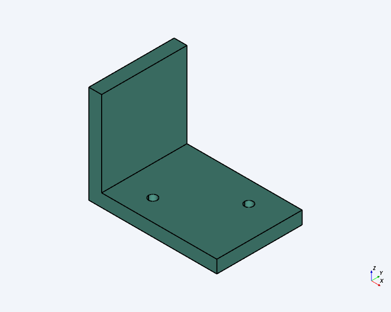
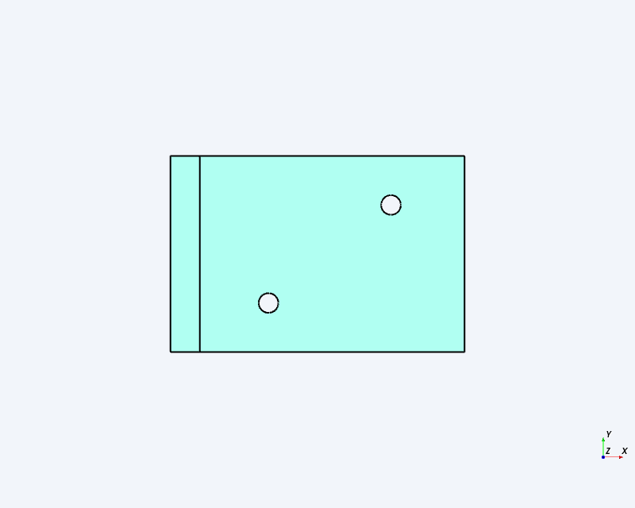
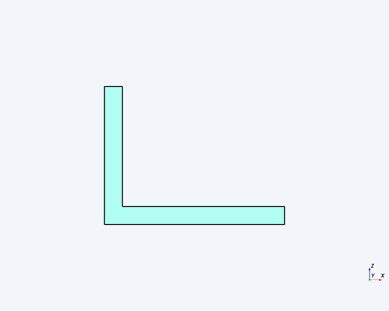
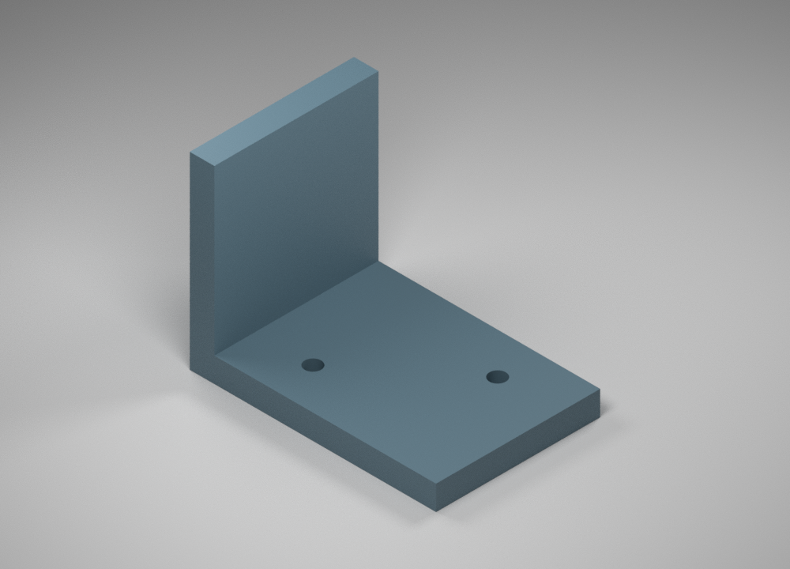
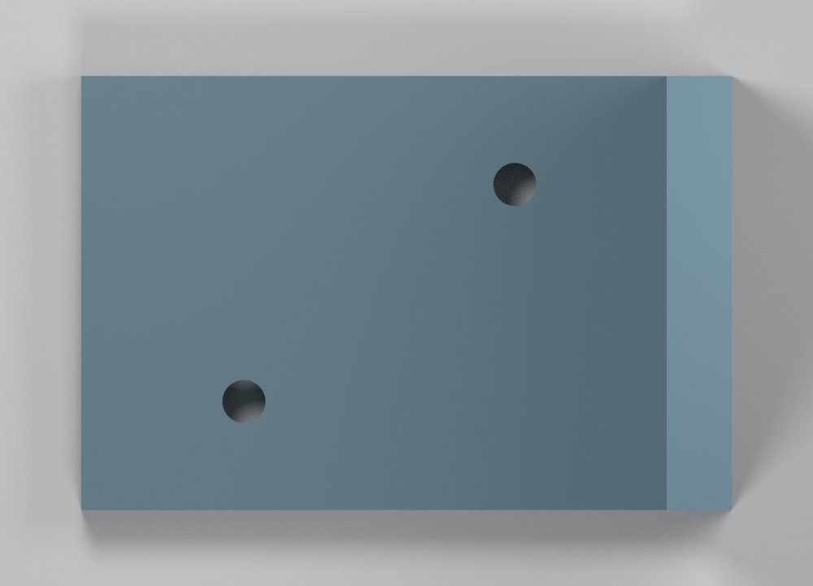

Final digital review of one editable, one-piece bracket. This report records digital design verification and qualitative presentation review; it does not record human acceptance, strength qualification, process qualification, or physical manufacturing acceptance.
A connected L-bracket in millimetres and a right-handed Z-up frame: base and upright rectangular regions are united once at the heel, with two plain Z-directed base holes. No fillets, chamfers, counterbores, countersinks, text, logos, or auxiliary components.
| Feature | Nominal definition | Actual CAD evidence |
|---|---|---|
| Base | X 0–60, Y 0–40, Z 0–6 mm | Included in measured bounds; direct wall separation unavailable |
| Upright | X 0–6, Y 0–40, Z 0–46 mm | Unperforated L upright; direct wall separation unavailable |
| Envelope | 60 × 40 × 46 mm | Min (0,0,0), max (60,40,46), extents (60,40,46) mm |
| Hole 1 | Ø4 at (20,10), Z 0–6 mm | Ø4.00; center (20.00,10.00); axis [0,0,−1]; depth 6.00 mm; through |
| Hole 2 | Ø4 at (45,30), Z 0–6 mm | Ø4.00; center (45.00,30.00); axis [0,0,−1]; depth 6.00 mm; through |
| Structure | 1 component/body/solid; 2 holes | 1 component, 1 body, 1 connected solid, 10 faces, 2 holes |
| Net volume | 23,849.20355 mm³; allowable 23,825.35435–23,873.05275 | 23,849.20355262769 mm³; deviation 0.00000262769 mm³ |
| ID | Result | Actual result and evidence |
|---|---|---|
| R01 | UNVERIFIED | Fresh document ID confirmed; earlier-artifact preservation not enumerated. |
| R02 | PASS | mm, Z-up; absolute bounds exactly 0..60, 0..40, 0..46 mm. |
| R03 | PASS | Complete solid; expected four-feature inventory and exactly two cylindrical holes. |
| R04 | PASS | 1 component, 1 body, 1 connected L-shaped solid. |
| R05 | PASS | All six limits and three extents have 0.00 mm deviation; tolerance ±0.01 mm. |
| R06 | UNVERIFIED | Required direct base/upright planar separations were not returned; source dimensions were not substituted. |
| R07 | PASS | Hole 1 actual Ø4.00, (20.00,10.00), depth 6.00 mm, Z-parallel. |
| R08 | PASS | Hole 2 actual Ø4.00, (45.00,30.00), depth 6.00 mm, Z-parallel. |
| R09 | PASS | Reported linear deviations 0.00 mm; angular deviation 0.00°. |
| R10 | PASS | Upright holes and all prohibited-feature counts 0; no extra component. |
| R11 | PASS | All editable identifiers lowercase. |
| R12 | PASS | Measured volume lies inside ±0.1% interval. |
| R13 | PASS | Native metadata: fdm-petg presentation mechanism, matte, exact color #607d8b. |
| R14 | PASS | All three studio views visibly use a matte blue-gray appearance; metadata supplies #607d8b. |
| R15 | PASS | Three orthographic CAD captures: isometric (+X,−Y,+Z), top +Z, front −Y. |
| R16 | FAIL | Three native Blender renders use the validated STEP mesh, but the top pair has an opposite-side upright strip and therefore does not preserve the captured orientation convention. |
| R17 | PASS | Feature count, silhouette, camera, and appearance were qualitatively compared without pixel metrology. |
| R18 | PASS | Editable link, revision/build/run, STEP format, and geometry-matching report recorded. Export filename/checksum were not supplied. |
| R19 | PASS | This review includes requirements, planned tests, measurements, six images, identities, linkage, and unresolved findings. |
T01 UNVERIFIED (document retention); T02 PASS (frame/bounds); T03 PASS (topology/interfaces); T04 UNVERIFIED (walls); T05 PASS (holes); T06 PASS (volume); T07 PASS (editability); T08 PASS (metadata); T09 PASS (CAD captures); T10 FAIL (top camera/orientation correspondence); T11 PASS (package/linkage). Earlier deferred presentation checks have now been evaluated rather than retained as deferred failures.





These image comparisons are qualitative. They do not establish dimensions, exact color under lighting, pixel identity, or geometric compliance. Geometric compliance derives from CAD measurements and the cited export geometry report, not from rendered images.